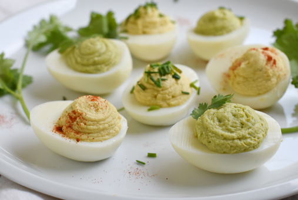

2 ajíes verdes grandes, sin pepas ni nervios, picados en cubos pequeños
20 colas de camarones cocidos
PREPARACIÓN
Con un cortador redondo de 4cm aprox. cortar 60 círculos de pan de molde. Dividir la
mayonesa en 4 potes. Poner Eneldo Gourmet al primer pote, Orégano Molido Gourmet a otro,
Pimentón Paprika Gourmet a otro y Pimienta Negra Molida Gourmet al cuarto; mezclar bien
para integrar.
Para los canapés de palmitos: cortar los palmitos en rodajas cada ½ cm. Untar 20
círculos de pan con la mayonesa con Pimienta Negra Molida Gourmet, luego poner un pedazo
palmito y terminar con Ciboulette Gourmet.
Para los canapés de pavo: con el mismo cortador del pan, cortar 20 círculos de pechuga
de pavo. Untar 20 círculos de panes con la mayonesa con Pimentón Paprika Gourmet, tapar
con el jamón de pavo y decorar con las almendras.
Para los canapés de tomates: Cortar los tomates en lonjas delgadas. Ponerlas sobre una
toalla de papel. Espolvorear con Sal de Mar Gourmet y dejar reposar por 10 minutos.
Luego con el mismo cortador del pan, cortar 20 círculos de tomates. Untar 20 círculos de
panes con la mayonesa con Orégano Molido Gourmet, tapar con el tomate cortado y decorar
con ají verde picado.
Para los canapés de camarones: Untar 20 círculos de panes con la mayonesa con Eneldo
Gourmet y luego decorar con una cola de camarón.
HUEVOS RELLENOS

INGREDIENTES
4 huevos
4 cucharadas de mayonesa o yogurt natural (o una mezcla de ambos)
1 cucharadita de mostaza
¼ cucharadita de Tomillo Gourmet o Pimentón Páprika Gourmet
PREPARACIÓN
Poner los huevos en agua y cocinar por 10 minutos, contando cuando el agua empiece a
hervir.
Una vez listos, sacar los huevos y colocarlos bajo el chorro de agua helada.
Una vez fríos, pelarlos y cortarlos por la mitad. Sacar las yemas y molerlas con un
tenedor.
Agregar el resto de los ingredientes a la yema molida e integrar bien.
Rellenar los huevos con la pasta de yema preparada.
Poner en un plato y servir.
CAMARONES AL AJILLO
INGREDIENTES
Para los camarones:
CAMARONES AL AJILLO
sal a gusto
Pimienta Negra Molida Gourmet a gusto
Jugo de limón
2 huevos
2 cucharadas de Ajo Granulado Gourmet
1 cucharada de perejil picado
½ taza de harina
Aceite para freír
Para la salsa:
1 taza de mayonesa
¼ taza de ketchup
Sal a gusto
Pimienta Negra Molida Gourmet a gusto
1 cucharada de jugo de limón
Pizca de azúcar
PREPARACIÓN
En un recipiente colocar los camarones y sazonar con sal, Pimienta Negra Molida Gourmet
y gotas de jugo de limón.
En un bol colocar los huevos y agregar 1 cucharadita de agua, batir.
En otro recipiente colocar el Ajo Granulado Gourmet, perejil picado y harina.
Pasar los camarones por la mezcla de harina, luego por la de huevo y nuevamente por la
mezcla de harina. Refrigerar 5-10 minutos.
En un sartén calentar a fuego medio suficiente aceite para freír los camarones. (tomar
las precauciones necesarias para no quemarse mientras se fríen los camarones).
Colocar los camarones de a poco y freír 2-3 minutos por lado o hasta que estén
crocantes. Retirar y estilar en papel absorbente.
En un recipiente colocar los ingredientes para la salsa y mezclar hasta incorporar.